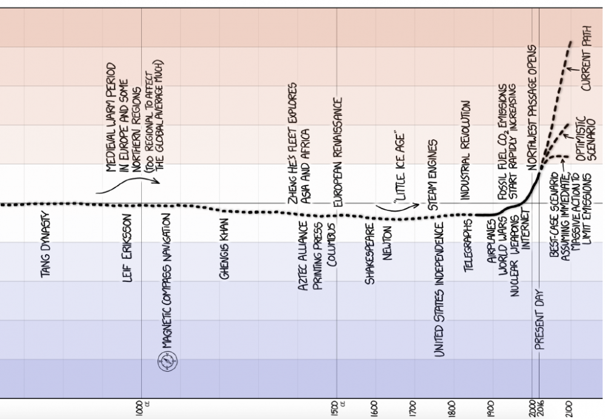

1. GLOBAL WARMING
2. ANALYZING ONLINE CLIMATE DATA USING PANDAS
EXERCISE 7 (Python notebook)
There is an enormous amount of information that one can find on the internet about global warming. This includes scientific articles, cases of scientific mistakes and scientifc misconduct. Personally, in order to avoid long discussions I prefer a more distant view as a scientist: we are doing an experiment to measure the amount of global warming by putting large amounts of carbon dioxide into the atmosphere. This is an experiment that, ethically speaking, we should not be doing. This point is nicely summarized in this xkcd cartoon. For those who want to know how important this could be have a look at the xkcd cartoon about 4.5 degrees.

To get an idea what we are looking for one could use the last 1000 years of a cartoon of the global temperature that is based on real scientific data from a 2003 paper. Note that the extrapolation to the future in the cartoon depends a lot on how much you average and smooth the data. As such, one should do a little more research to have a well-informed opinion about the effect of global warming and the exact magnitude.
This exercise is about trying to answer a much simpler question: Can we prove a statistically significant temperature rise in the Netherlands over the past 100+ years using the data of the Dutch metrology institute? Note that a statistically significant effect in the Netherlands does not imply statistically significant global warming. Similarly, if there is no measurable effect in one country this does not mean that there is no global warming. Also, finding a statistically significant effect does not neccesarily point to a correlation with increased levels of carbon dioxide or other greenhouse gases as the cause of a local or global effect.
More information on this topic (in Dutch) can be found via the climate website of KNMI. Particularly relevant is the KNMI climate dashboard and the definition of a central Dutch temperature (CNT). The goal of this exercise is not to reproduce this graph, it is to verify and form your own opinion. Do take into account that KNMI may have more data, more understanding and more sophisticated models to analyze the data.